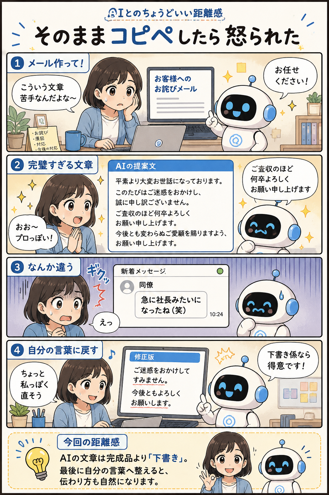

#029
そのままコピペしたら怒られた
AIの文章は便利。でも最後は自分の言葉に整えると自然です。

メモ
AIにメールやメッセージを書いてもらうと、 驚くほどきれいな文章が返ってくることがあります。
丁寧で、 誤字も少なく、 いかにも仕事ができそうな文章です。
だからこそ、 「そのまま送ればいいか」 と思ってしまいます。
でも実際に送ると、 自分が普段使わない言葉や言い回しが混ざることがあります。
急に堅苦しくなったり、 逆に不自然に丁寧になったり。
読んだ相手は違和感に気づくことがあります。
今回の漫画の 「急に社長みたいになったね（笑）」 は少し大げさですが、 実際によくある話です。
AIは文章作成が得意です。
ただし、 あなた自身の話し方や人間関係までは完璧には知りません。
だから、 最初の下書きを作ってもらう役として使うのがおすすめです。
最後に少しだけ読み返して、 自分らしい言葉に直す。
それだけで、 AIの便利さと自然なコミュニケーションの両方を得られます。
今回の距離感
AIの文章は完成品より「下書き」。最後に自分の言葉へ整えると、伝わり方も自然になります。